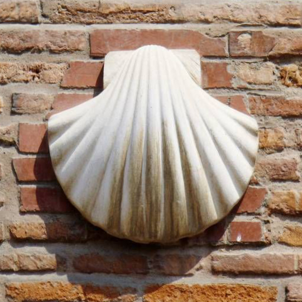
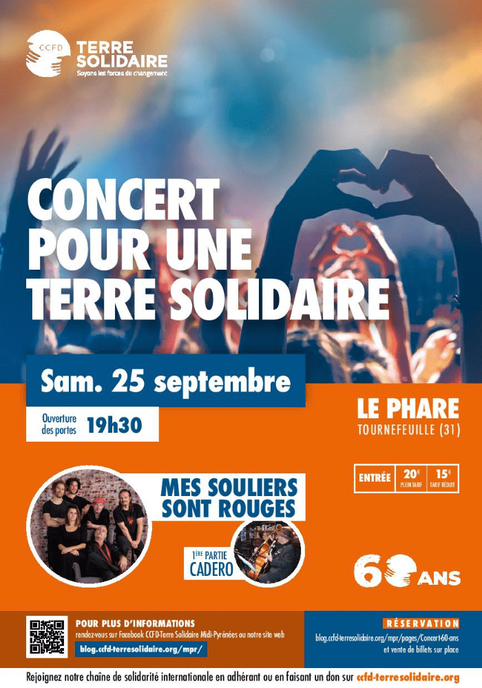

Actualité, agenda
Semaine du 29 août au 4 septembre
Actualité paroissiale
Reprises des messes aux horaires habituels
Le weekend
- Sacré Cœur
- Samedi à 18h30 (Confession à partir de 18h)
- Dimanche à 10h30
- Dimanche à 18h30 (Confession à partir de 18h)
- Saint Nicolas
- Dimanche à 10h30
- Sainte Marie de Casselardit
- Dimanche à 9h00
En semaine
- Sacré Cœur
- Mardi, jeudi et vendredi à 8h00
- Saint Nicolas
- Du mardi au vendredi à 18h30
A venir:
- Samedi 4 septembre 9h au Sacré Coeur, Messe des défunts
- Samedi 11 septembre, Journée jacquaire, Inscrivez-vous !
- Samedi 25 septembre, Concert pour les 60 ans du CCFD (Tournefeuille)
Prions pour:
- l'organisation des différentes activités de la paroisse et la constitution des diverses équipes pour vivre et annoncer l'évangile !
Le samedi 11 septembre
Journée jacquaire
Sur les chemins de St-Jacques de Compostelle

En collaboration avec la Pastorale des Réalités du Tourisme et des Loisirs et l’association des Amis des Chemins de Saint Jacques en Occitanie, à l’occasion de l’Année sainte jacquaire.
Au programme:
Accueil des pèlerins à l’église St-Nicolas, visite de l’Hôtel Dieu, pique-nique, visite de la
basilique St-Sernin, rencontre avec l’association des Amis des Chemins de Saint Jacques
Journée entièrement gratuite.
Inscriptions obligatoires.
Découvrez le programme complet de la journée et inscrivez-vous sur le site
du diocèse de
Toulouse
Le samedi 25 septembre
Concert pour les 60 ans du CCFD
Mes Souliers Sont Rouges au Phare à Tournefeuille

Mes Souliers Sont Rouges est un groupe normand de folk alternative.
Le concert aura lieu au Phare à Tournefeuille
Ouverture à partir de 19h30 avec Cadero en première partie.
Plus d'informations sur
le site du diocèse
Recherchons des talents
- Une personne pour la création d'affiches (FB, site...) pour avoir des supports attractifs
- Des personnes pour travailler un support écrit pour les annonces paroissiales en vue de reprendre un bulletin paroissial écrit.
- Pour rechercher des fonds pour permettre de continuer les travaux d'entretien et de valorisation de nos locaux paroissiaux (salles, église...). Actuellement, une personne nous offre sa main d'oeuvre et sa compétence et aussi son réseau pour trouver du matériel bon marché, nous devons arrêter faute de moyens, alors que nous avons des besoins très concrets.
- Personnes intéressées pour monter une « garderie spi pour les petits enfants pendant la messe » (1 an à 3 ans et demie) pour répondre aux besoins des parents, des enfants et de tous les paroissiens. Nous contacter pour vous mettre en relation avec le couple porteur de ce projet.
St Nicolas
Une petite équipe se constitue avec Joëlle et Dominique pour améliorer l'affichage et la présentation de l'église. N'hésitez pas à vous manifester auprès d'elle pour rendre notre église encore plus accueillante et les diverses propositions plus lisibles !
Pour que les visiteurs se sentent accueillis, une équipe Accueil se monte dans l'église. Si vous êtes tentés par cette expérience, ou si vous connaissez des personnes du quartier qui pourraient se sentir concernées... Contact : Isabelle R : isolabella51 AT hotmail.com
Permanences
À Saint Nicolas le vendredi de 17h à 19h au 1 rue Bourdelle.
Au Sacré Cœur, pas de permanence en août. Les permanences reprendront en septembre aux horaires suivants: le mercredi de 15 à 17 heures, le jeudi de 15h30 à 17h30, le vendredi de 9h30 à 11h30 et de 15h à 17h et le samedi de 9h30 à 12h.
Catéchisme
L'inscription est possible tout au long de l'année. Les formulaires sont à disposition dans les permanences respectives.
Une séance est organisée tous les 15 jours : à Saint Nicolas le samedi de 10h à 12h et au Sacré Coeur le dimanche à 9h30 suivie de la messe des familles.
Groupes, services
- Scouts et guides de France
- Équipe d'animation pastorale
- Oasis
- Solidarité Migrants Patte d'Oie
Liens utiles
- Messes info
- Diocèse de Toulouse
- Ancien site paroissial
- AELF : lectures du jours
- Denier de l'Église
- Kaïré, la Pastorale des 11-18 ans à Toulouse